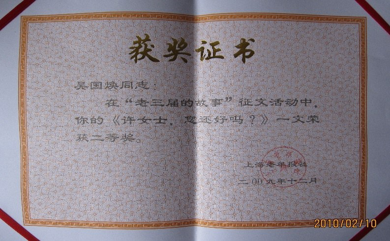
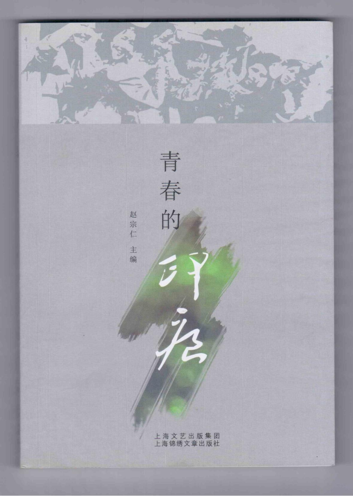

史无前例的文革，一年一年渐行渐远。
其间许多惊心动魄的大事，也开始渐渐地淡出亲历那场浩劫的老三届的脑海。
可是，一件并不起眼的小事，却一直萦绕在我的心头。
６８年深秋，我上山下乡来到崇明东风农场。不久，就听老职工们不无神秘地说起：可不要小看咱们农场啰，也是藏龙卧虎之地呢！在农场场部，就有汤恩伯的一个贴身副官，有名有姓，叫严励。
说起汤恩伯，在我们的印象中，除了曾经有过的解放前河南的“水、旱、蝗、汤”四大灾一说之外，就是儿时大家都拿腔拿调争着模仿的电影《战上海》中“汤司令到……”的台词了。那么，这个严励，真是电影中跟在汤司令身后的威风凛凛的副官吗？
一次，到场部办事，经人指点，还真的见着了这个严励：瘦瘦小小一个老头，看上去老实巴交的，丝毫没有什么惊人之处……，我感觉有些失望，就此按下不提。
文革中，经常会发生一些意想不到的事。后来，我与这个严励居然真的打起了交道。真是令人难以置信。
是阶级斗争的风浪把我们推到了一起。
大约过了一年，农场里派来了“贫宣队”，搞起了“一打三反”运动。到底“打”什么，“反”什么，已经记不清了，反正象严励这样的老运动员是难免要剧烈运动一番的。
“贫宣队”看我人本分，又会写写，委我以农场“一打三反”办公室“材料员”的重任。任务恰好就是彻底清查严励的历史。
在那个“阶级斗争要年年讲、月月讲、天天讲”的年代，这是何等光荣的一个任务。
更何况我的家庭也“有些问题”，正是接受“贫下中农再教育”的对象。所以对贫宣队的重用、真有点受宠若惊。
满怀着责任感，我翻开了严励厚厚的两大卷破旧的档案。
一行文字出现在我的眼前：严励，伪国民党上海警备司令部司令汤恩伯的庶务副官，军衔少校，常住汤家，主管汤家财务……
这个“庶”字，我也是查了字典后才认识的。庶务副官，说白了也就是管家的意思。
我想，这个严励与汤恩伯的关系如此亲密，这还了得。说不准他真是潜伏下来的特务？
阶级斗争这根弦一下子绷紧了，我把严励的档案仔仔细细的查阅一遍。把他的亲朋好友、社会关系一一列出，决不放过一丝一毫细小的线索。
其中，不少是正在劳改农场改造的劳改犯，有的是正在蹲牢的在押犯……
我边记边想：这些都是顽固的“牛鬼蛇神”，他们会交待出什么有价值的情况吗？
忽然，一个小姑娘的名字出现在眼前：许洛清，十八岁，解放前夕，在汤恩伯家当过三个月的家庭教师……。这一发现，使我兴奋不已。你想：许这么年轻，当然单纯一些，而且一个当家庭教师，一个是庶务副官，都在汤家干过，相互应该比较熟悉。也许她真会掌握一些什么情况呢。
带着这样一个天真的想法，我和同事在造访了几个戒备森严的监狱和偏僻荒凉的劳改农场后，又千里迢迢赶到了天津进行外调。从市公安局的口卡里查到了许的单位，是一所学校。第二天，在学校的接待室里，我们见到了许女士。
她，四十不到，齐耳短发，白皙的脸，一双略带忧郁的眼睛。
谈话开始了。
“你是许洛清？”
“嗯”
“解放前夕，你在汤恩伯家当过家庭教师？”
“嗯”
“多长时间？”
“三个月。”
“你知道汤家有一个叫严励的人吗？”
“……”
使我们大为失望的是：她似乎根本不认识严励。
更使我大为吃惊的是：短短几分钟时间，许女士的脸竟变得像纸张那样的苍白。
呼吸也局促起来，仿佛在克制难以忍受的痛苦。
随后，照例把调查笔录给学校负责人过目，盖上公章。
那位负责人盯着笔录看了一会儿，说：唔，这个情况，我们组织上并不掌握。年纪轻轻的一个姑娘家，居然跑到汤恩伯家里……
话语虽然轻轻的，但是在文革中，这几个字恐怕比锋利的刀子还厉害，足以置人死地的。
啊，我一下子明白了许女士的脸为什么那么惨白。我已经在无意中给她带来了灭顶之灾。
漫漫的文革十年，我没有参加造反派，没有批斗师长，没有伤害过任何人。现在我却深深地伤害了一个无辜的人。
十八岁的女孩子，可能为生计所迫，外出当一名家庭教师挣点钱补贴家用；也可能为增加一点实际经验，想通过当家庭教师来尝试一下，提高自己的能力。
但是在那个疯狂的年代，哪里有一个弱女子辨白的地方。她会被当成潜伏的特务，遭批、挨斗……
多少年了，那张苍白的脸有时仍会模糊地出现在我眼前，伴随着我的深深的内疚，……
造化真是弄人！
星移斗转，这些年来国民党的形象在我们这一代的心中，已远不是小时候心目中的“蒋匪帮”那么可怖了。
今天，人们正期盼着国共第三次合作，为两岸百姓带来福祉。网上一搜索，还有不少关于“国军名将汤恩伯”在抗日战争中打胜仗的正面报道呢。许女士在汤家当家庭教师的这段经历放到现在说不定会成为哪位作家笔下生动的素材……
风雨终于过去，阳光终于出现。只是：
许女士，您还好吗？
注：本文在2009《上海老年报》举办的《老三届的故事》征文活动中获得二等奖。本次活动邀请了叶辛、赵丽宏、王小鹰等著名作家担任评委。
(本文刊登在2009年8月20日《上海老年报》，并结集出版，收录于《青春的印痕》一书)

